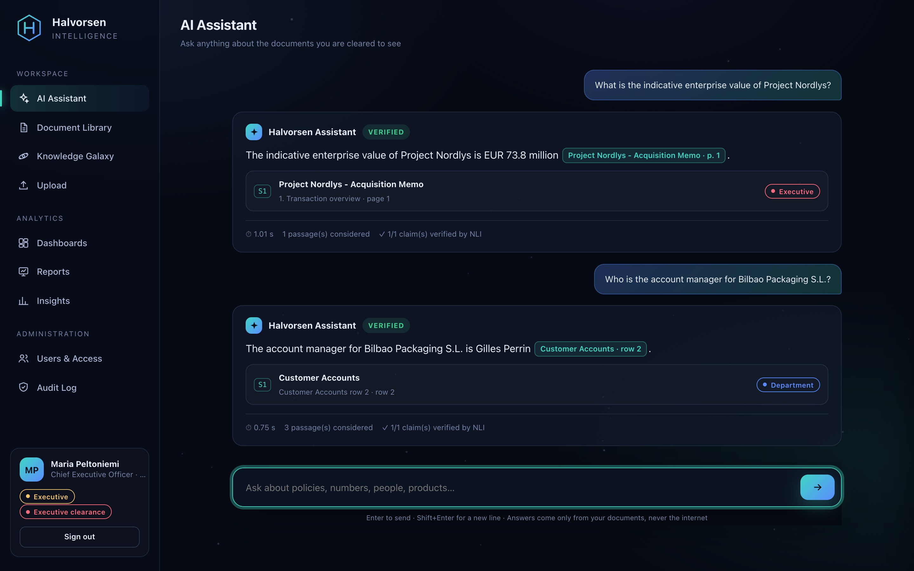
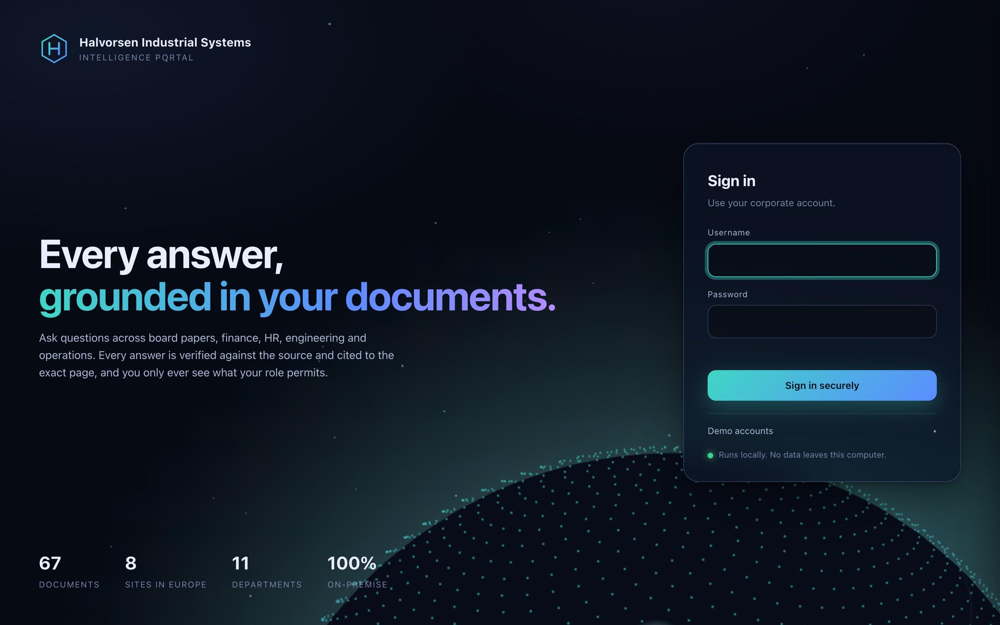
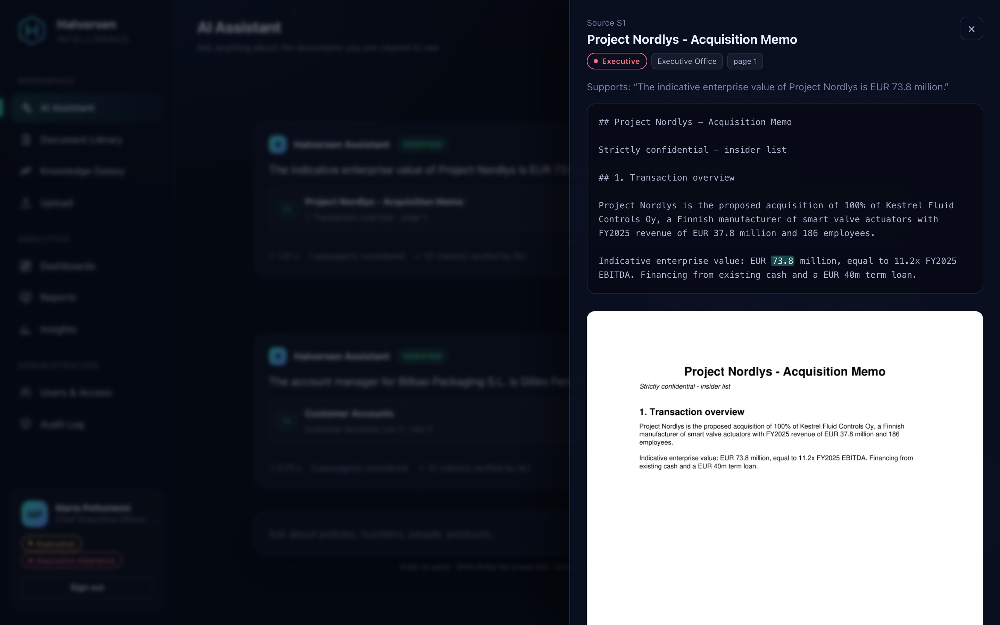
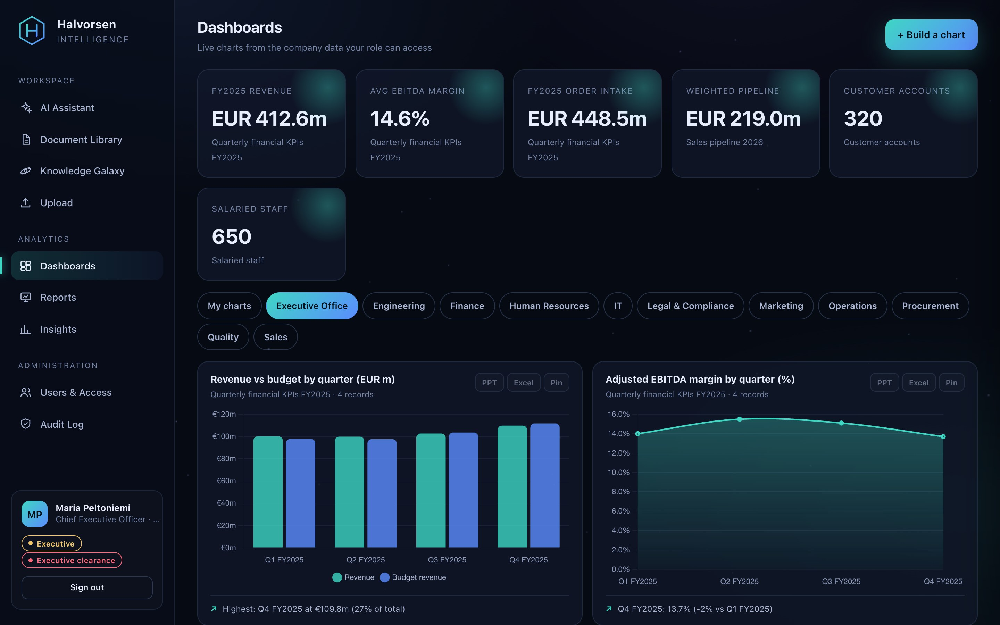
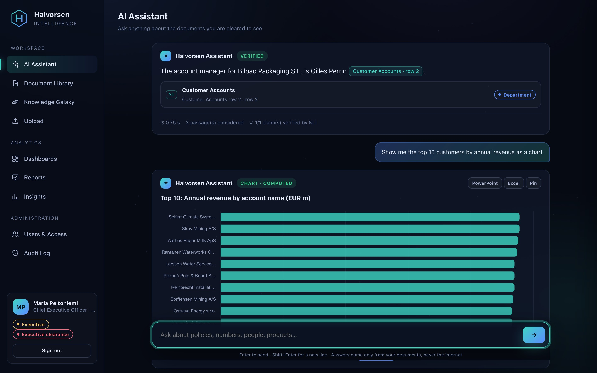
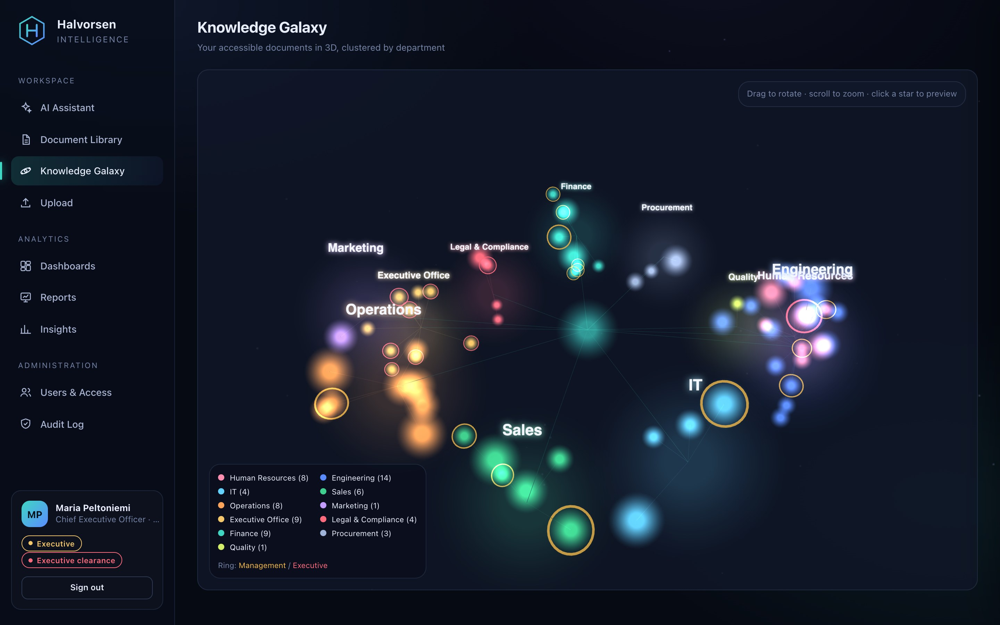
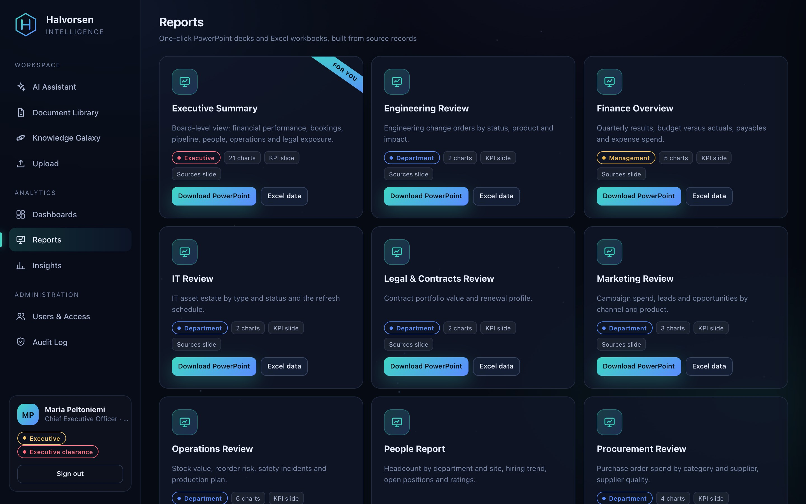

I build AI that shows its sources.
I'm Kiruthikkumaar, an AI specialist and full-stack developer focused on retrieval-augmented generation, local LLMs and the evaluation that proves they work. My latest system answers questions over private company documents, cites every claim to the exact page, and runs entirely on one laptop.
Enterprise Agentic RAG Engine
A zero-hallucination question-answering system for enterprise documents, with a secure company portal, role-based access, live dashboards and one-click PowerPoint reports. 100% on-premise: no data or query ever leaves the machine.

Answers you can audit.
Hybrid search (BGE-M3 dense + sparse in Qdrant, fused with RRF), a cross-encoder reranker I fine-tuned, Phi-4-mini generating cited answers, and an independent NLI guardrail that verifies every sentence before the user sees it.
From question to verified answer
General LLMs answer fluently even when they are wrong. In compliance, engineering or finance that is unacceptable, so this system retrieves evidence first, constrains the model to it, and refuses rather than guesses.
A realistic test bed
A synthetic enterprise of 14 documents (PDF, Word, CSV, Markdown) with 1,064 facts, including "hard negative" documents that mention the same entities in different contexts, plus 200 held-out questions labelled to the exact page.
Hybrid search + fine-tuned reranker
Dense and sparse search fused with Reciprocal Rank Fusion, then a cross-encoder I fine-tuned with a pairwise ranking loss on mined hard negatives: top-1 accuracy rose from 0.76 (fusion only) to 0.995.
Grounded, cited, verified
Phi-4-mini (LoRA fine-tuned on cited answers) writes 1-3 sentences, each cited. A DeBERTa NLI guardrail checks every claim and every number; failures trigger a retry or an explicit refusal.
Measured, not assumed
RAGAS (faithfulness, relevancy, context precision and recall) with an independent judge model, against a naive-RAG baseline, plus a guardrail stress test with corrupted claims.
A secure company portal
3D web UI with 30 role-based accounts, document-level access control enforced inside the vector search, dashboards, charts on request and one-click PowerPoint/Excel reports.
Nothing leaves the machine
Every model is served locally; the server binds to localhost, the hub is forced offline, PII is redacted at ingestion, and 25 automated security tests cover auth, CSRF and access control.
| Metric (200 held-out questions) | Target | Naive RAG | This system | + LoRA |
|---|---|---|---|---|
| Context precision | ≥ 0.90 | 0.79 | 0.99 | 0.99 |
| Citation accuracy | ≥ 0.95 | 0.97 | 0.99 | 1.00 |
| Faithfulness (RAGAS) | ≥ 0.95 | … | … | … |
| Answers correct | - | 92.0% | 98.0% | 99.5% |
| Wrong answers delivered | - | 2.5% | 1.0% | 0% |
| Refuses unanswerable questions | - | 100% | 100% | 100% |
| Latency p95 | < 3.5 s | 1.2 s | 2.3 s | 2.0 s |
| Answer relevancy (RAGAS) | - | 0.93 | 0.95 | 0.87 |
Honest notes: the corpus is synthetic (real enterprise documents are messier). Faithfulness is scored with the judge shown exactly what the generator saw (validated on held-out development questions first); with page text only it is 0.89. The LoRA model trades some answer relevancy (shorter answers) for zero wrong answers. Bugs found during test-set error analysis were fixed and the pre-fix results are reported in the notebooks.
Try it yourself
Sign in as the CEO, a finance manager or a sales employee and see how the same question gets a different answer depending on what you are cleared to read. The demo replays real, recorded outputs of the system in its actual interface, so it works instantly in any browser.






Computer vision, NLP and full-stack AI
Systems I have built in industry and at university, from face recognition at live events to voice assistants.
NOVARACE race platform
Full-stack race management platform (ReactJS + Flask) serving thousands of users; optimised databases and APIs cut image retrieval and race-timing processing by 30%+.
Face recognition for live events
Participant identification with HOG, linear SVM and deep metric learning (ResNet), reaching 98%+ accuracy during live races.
Jersey number recognition
K-Means, HOG + ELM and EasyOCR pipeline that processes 10,000+ race photos automatically with minimal manual work.
Invest With Confidence
Next-day stock price forecasting with LSTM and dense networks on decades of market data (YFinance), combined with news sentiment from NLTK VADER.
AI Fitness Tracker
Real-time form checking and rep counting for squats, push-ups and planks with MediaPipe BlazePose and OpenCV, spoken feedback and a SQLite workout log.
Multilingual voice shopping assistant
Intent recognition with neural networks, TF-IDF and Naive Bayes, a multilingual speech interface and voice-driven product recommendations.
Engineering trust into AI
I'm Kiruthikkumaar Radhakrishnan, an AI specialist and full-stack developer studying for a Master of Artificial Intelligence and Machine Learning at Adelaide University. I build systems that connect neural networks to real products: computer-vision models running at live events, NLP assistants, and now grounded LLM systems that cite their sources.
I care about the parts that make AI trustworthy in practice: clean data, honest evaluation, access control, and reporting what works as well as what doesn't.
Based in Adelaide, Australia. Bachelor of Information Technology from Coimbatore Institute of Technology, India.
Master of Artificial Intelligence and Machine Learning · Adelaide University
GPA 6.0 / 7. Adelaide, Australia.
Full Stack Web Developer Intern · Leanfolks Technology Solutions
Led full-stack development of NOVARACE (ReactJS, Flask), built face recognition (98%+ accuracy) and jersey-number recognition (10,000+ images) for live race events, and cut processing times by 30%+. Erode, India.
Bachelor of Information Technology · Coimbatore Institute of Technology
Grade 76%. Association Treasurer of the IT Department (2023-2024), managing funds for workshops and student events.
Retail Assistant · RG Car Craze
Customer support, inventory, and routine system updates, backups and maintenance. Coimbatore, India.
Google Project Management · IBM Data Science Methodology · The Complete Python Programming Bootcamp
Coursera and Udemy.